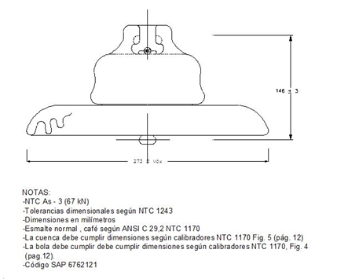

Siempre es más fácil conocer las normas ENEL-CODENSA
Rolex Rolex gold watch, compared with ordinary materials, gold watches are often expensive, but the replica rolex gold watch has the role of swiss replica watches hedging, so that it often becomes the first choice for collectors. The gold watch has value in the world, largely because the omega replica watch brand launched a commemorative limited edition watch or a replica hublot complex movement process or artistic attainments deep watches, mostly preferred gold precious metals such material. These watches tend to have a strong hedging function, therefore, Rolex Rolex gold watch reputation.

ET-AT252 Aisladores de suspensión tipo FOG para líneas de transmisión
Datos adicionales
Número de especificación
ET-AT252
Fecha de vigencia
28/01/2005
Herramientas adicionales
- Contenido Ocultar
- 1. OBJETO DE LA ESPECIFICACIÓN
- 2. ALCANCE
- 3. CONDICIONES DE SERVICIO
- 4. SISTEMA DE UNIDADES
- 5. NORMAS DE FABRICACIÓN Y PRUEBAS
- 6. REQUISITOS TÉCNICOS
- 7. PRUEBAS
- 7.1 ENSAYOS TIPO
- 7.2 ENSAYO DE RUTINA
- 8. EMBALAJE PARA EL TRANSPORTE
- 9. INFORMACIÓN PARA LA OFERTA
- 10. GARANTÍAS
1. OBJETO DE LA ESPECIFICACIÓN
Establecer los requisitos generales que debe cumplir el suministro, fabricación, inspección y ensayos de AISLADORES DE SUSPENSIÓN TIPO FOG de uso exterior a ser utilizados en las Líneas de Transmisión de 115 kV de CODENSA S.A.
El suministro debe incluir los accesorios necesarios para su instalación, puesta en servicio y operación, los planos de construcción y los informes de prueba.
2. ALCANCE
La presente especificación se aplicará a aisladores de suspensión tipo fog que adquiera CODENSA S.A. ESP.3. CONDICIONES DE SERVICIO
Las condiciones ambientales y eléctricas del sistema que se deben tener en cuenta para el diseño de los aisladores, a instalar en el área de concesión de CODENSA S.A. E.S.P son los siguientes:| CARACTERÍSTICAS AMBIENTALES | |
| a. Altura sobre el nivel del mar | 2 650 m |
| b. Ambiente | Tropical |
| c. Temperatura máxima y mínima | 40 ºC y - 10 ºC respectivamente. |
| d. Nivel de humedad | Mayor al 90 % |
| e. Velocidad viento (m/s) | < 34 |
| f. Nivel contaminación (IEC 60815) | Muy pesado (IV) |
| g. Radiación Solar máxima (W/m²) | < 1000 |
| i. Instalación | Intemperie |
| CARACTERÍSTICAS ELÉCTRICAS DEL SISTEMA | |
| a. tensión nominal del sistema (kV) | 115 |
| b. Tensión máxima del sistema (kV) | 126,5 |
| c. BIL (kV) a 0 msnm (aislamiento externo) | 650 |
| d. Frecuencia del sistema | 60 |
| e. Número de fases | 3 |
4. SISTEMA DE UNIDADES
En todos los documentos técnicos se deben expresar las cantidades numéricas en unidades del Sistema Internacional (S.I.).5. NORMAS DE FABRICACIÓN Y PRUEBAS
| NORMA | DESCRIPCIÓN |
| ANSI C29.2 | American National Standard for insulators – Wet process porcelain and toughened glass - Suspension type. |
| ANSI C29.1 | Test methods for electrical power insulators |
| ASTM A-153 | Galvanizado por inmersión en caliente para herrajes y perfiles estructurales en hierro y acero. |
Pueden emplearse otras normas internacionalmente reconocidas equivalentes o superiores a las aquí señaladas, siempre y cuando se ajusten a lo solicitado en la presente especificación técnica.
Las normas citadas en la presente especificación o cualquier otra que llegare a ser aceptada por CODENSA S.A., se refieren a su última revisión.
6. REQUISITOS TÉCNICOS
Los aisladores serán de porcelana del tipo proceso en húmedo “wet process”, de altas propiedades aislantes, alta resistencia mecánica, alta inercia química, elevado punto de fusión, esmalte color café, porosidad nula, libre de defectos tales como grietas, calcinaciones, burbujas y estar completamente vitrificado. Los aisladores y sus aditamentos deben ser inmunes a la acción de la humedad, el humo, el polvo, el ozono, etc. y a los cambios rápidos de temperatura, en condiciones de trabajo.
Toda la superficie expuesta del aislador debe cubrirse con un vidriado de tipo compresión duro, liso, brillante, impermeable a la humedad que le permita mantenerse fácilmente libre de polvo o suciedades residuales ocasionadas por la contaminación ambiental por medio de lavado natural de las aguas lluvias.
Los aisladores deben ser del tipo cuenca-bola.
7. PRUEBAS
Los ensayos se realizarán conforme lo determina la norma ANSI C29.1, ANSI C29.2.7.1 ENSAYOS TIPO
Si el oferente hubiera realizado los Ensayos de Tipo de acuerdo a una norma o recomendación diferente a las solicitadas, deberá presentar los protocolos de ensayos correspondientes acompañados de una copia de la Norma respectiva en idioma de origen y su traducción al castellano o inglés, reservándose CODENSA S.A. ESP el derecho de aceptarlos o de solicitar la repetición de los Ensayos de Tipo de acuerdo a lo indicado en la presente especificación técnica, a cargo del oferente.Los Ensayos Tipo deberán ser repetidos toda vez que sobre un modelo aprobado se introduzcan cambios de diseño, de materiales o tecnológicos de fabricación.
- Tensión de flameo, a 60 Hz en Seco.
- Tensión de flameo, a 60 Hz. en húmedo.
- Tensión de impulso a flameo crítico con onda positiva y negativa.
- Tensión de radio-interferencia.
- Ensayo de ciclo termomecánico.
- Prueba de choque térmico.
- Resistencia mecánica residual.
- Resistencia al impacto.
- Prueba de la chaveta de sujeción para los aisladores tipo cuenca y bola.
7.2 ENSAYO DE RUTINA
- Inspección visual y dimensional.
- Ensayo de tracción.
- Ensayo de flameo en seco.
- Ensayo de porosidad.
8. EMBALAJE PARA EL TRANSPORTE
Los aisladores y sus accesorios deberán ser embalados para transporte marítimo y terrestre de exportación, preparando el embalaje para evitar daños (golpes, corrosión, absorción de humedad, etc.)Los embalajes deben ser adecuados para soportar las operaciones normales de carga, descarga, y el eventual apilamiento de un empaque sobre otro.
El embalaje de los accesorios deberá prepararse especialmente para transporte y manipulación poco cuidadosa, y deberá tener indicaciones muy claras respecto a la fragilidad de su contenido.
Cada uno de los empaques deberá incluir facilidades para levantarlo mediante estrobos.
Todos los empaques deberán llevar los detalles necesarios de identificación y manipulación, en forma clara e indeleble, tanto de su contenido como de los detalles de la Orden de Compra, en especial de la Empresa destinataria.
9. INFORMACIÓN PARA LA OFERTA
Todos los documentos relacionados con la propuesta, tales como planos, descripciones técnicas, especificaciones, deberán usar las unidades de medida del sistema métrico decimal.El idioma a utilizar en todos esos documentos será el español. En forma excepcional se aceptarán catálogos o planos de referencia en inglés.
Cada proponente deberá entregar junto con su oferta, la información solicitada en esta especificación y cualquier otra información necesaria que permita a CODENSA poder seleccionar los equipos a adquirir. Deberá incluirse la siguiente información:
- Una lista de los equipos incluidos en el suministro destacando sus características y componentes principales, Tabla No.1 y Manual de Garantía de Calidad.
- Protocolos de las pruebas tipo de los aisladores ofrecidos.
- Una lista de referencia de las instalaciones de los mismos tipos de aisladores ofertados, con el año de puesta en servicio. CODENSA se reserva el derecho de rechazar cualquier oferta si las referencias mostradas no son consideradas suficientes para garantizar una adecuada experiencia del licitante en el tipo de equipo solicitado.
CODENSA podrá solicitar informaciones adicionales en caso que considere insuficientes los antecedentes presentados, para lograr una adecuada evaluación técnica de la oferta.
CODENSA podrá rechazar una propuesta si la información entregada no tiene el suficiente grado de detalle y claridad. El proponente debe indicar claramente en su propuesta todos los puntos que presenten diferencias con respecto a esta Especificación.
10. GARANTÍAS
El equipo, así como sus componentes y accesorios, deben ser cubiertos por una garantía respecto a cualquier defecto de fabricación, por un plazo de 5 años a partir de la fecha de entrega.Si durante el período de garantía determinadas piezas presentaran desgaste excesivo o defectos frecuentes, CODENSA podrá exigir el reemplazo de esas piezas en todas las unidades del suministro, sin costo para él. A las piezas de reemplazo se les aplicará nuevamente el plazo de garantía.
ANEXO 1. TABLA DE CARACTERÍSTICAS TÉCNICAS GARANTIZADAS
AISLADOR ANSI 52-3 (TIPO FOG)
| DESCRIPCIÓN | UNIDAD | ESPECIFICADO | GARANTIZADO | |
| 1 | Fabricante | |||
| 2 | Normas de fabricación | NTC 1170 | ||
| ANSI C29.2 | ||||
| 3 | Normas para pruebas | NTC 1285 | ||
| ANSI C.29.1 | ||||
| 4 | Referencia de fabricación – catálogo | |||
| 5 | Material | Porcelana | ||
| 6 | Clase | ANSI 52-3 | ||
| 7 | Color del esmalte | Café | ||
| 8 | Peso del aislador | Kg | ||
| 9 | Distancia de fuga | mm | 432 | |
| 10 | Resistencia electromecánica | KN (lbf) | 111 (25000) | |
| 11 | E y M después del ciclo térmomecánico | KN | 111 | |
| 12 | Resistencia al impacto | N-m | 10 | |
| 13 | Resistencia a la tracción | KN | 40 | |
| 14 | Resistencia de carga sostenida | KN | 52 | |
| 15 | Tensión de flameo: | |||
| a. Baja frecuencia en seco | KV | 100 | ||
| b. Baja frecuencia en húmedo | KV | 55 | ||
| c.Crítica de impulso positivo 1,2x50 µseg. | KV | 150 | ||
| d.Crítica de impulso negativo 1,2/50 µseg | KV | 160 | ||
| 16 | Tensión de perforación a 60 Hz. | KV | 110 | |
| 17 | Tensión de radio influencia: | |||
| a. Tensión de pruebas RMS a tierra | KV | 10 | ||
| b. RIV maximo a 1000 kHz | µV | 50 |
FIGURA 1. AISLADOR DE SUSPENSIÓN ANSI 52-3
